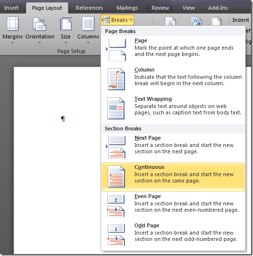
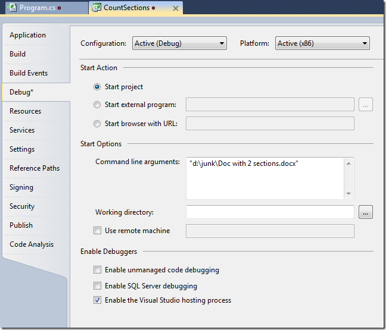
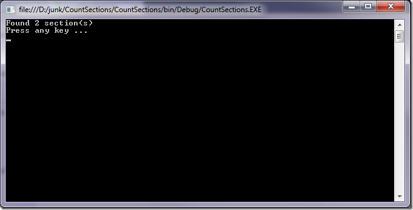

1/4/11 - Updated a couple of images and some of the code explanation
Adam Cogan asked me a question the other day that asked (among other things) "How do you know if a doc has multiple sections?"
In Word, of course, you can break a document up into sections by inserting a section break from the Breaks button in the Page Setup group on the Page Layout tab:

It turns out that counting these programmatically is really easy using the OpenXML SDK 2.0 (download)
I created a new console application, added a reference to DocumentFormat.OpenXML and WindowsBase and used this code:
- using System;
- using System.Collections.Generic;
- using System.Linq;
- using System.Text;
- using System.IO.Packaging;
- using DocumentFormat.OpenXml.Wordprocessing;
- using DocumentFormat.OpenXml.Packaging;
- using DocumentFormat.OpenXml.Office2010.Word;
- namespace CountSections
- {
- class Program
- {
- static void Main(string[] args)
- {
- if (args.Length != 1)
- {
- Console.WriteLine("Usage: CountSections <filename>");
- }
- else
- {
- using (WordprocessingDocument d =
- WordprocessingDocument.Open(args[0], false))
- {
- Console.WriteLine("Found {0} section(s)",
- d.MainDocumentPart.Document.Body.Descendants().
- OfType<SectionProperties>().Count()
- );
- }
- Console.WriteLine("Press any key ...");
- Console.ReadKey();
- }
- }
- }
- }
In it I take the filename passed as an argument and open it ReadOnly (line 22-23). I then find the number of sections using the typed enumerator (lines 26-27)
I also added the path to a file in the Command Line Arguments edit box in the Debug tab of the project Properties so there's a file being passed in when I press F5:

Running the program gives the answer very quickly:

Cool huh?
Sample file with 2 sections Download